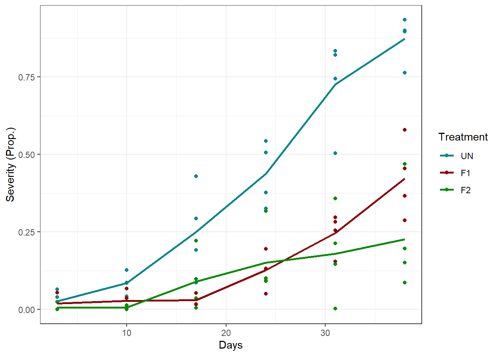
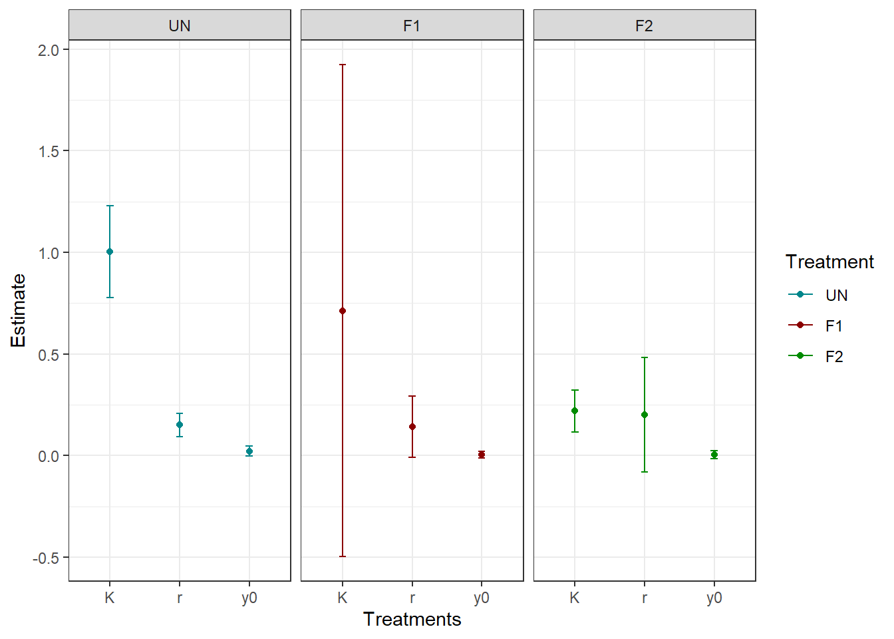
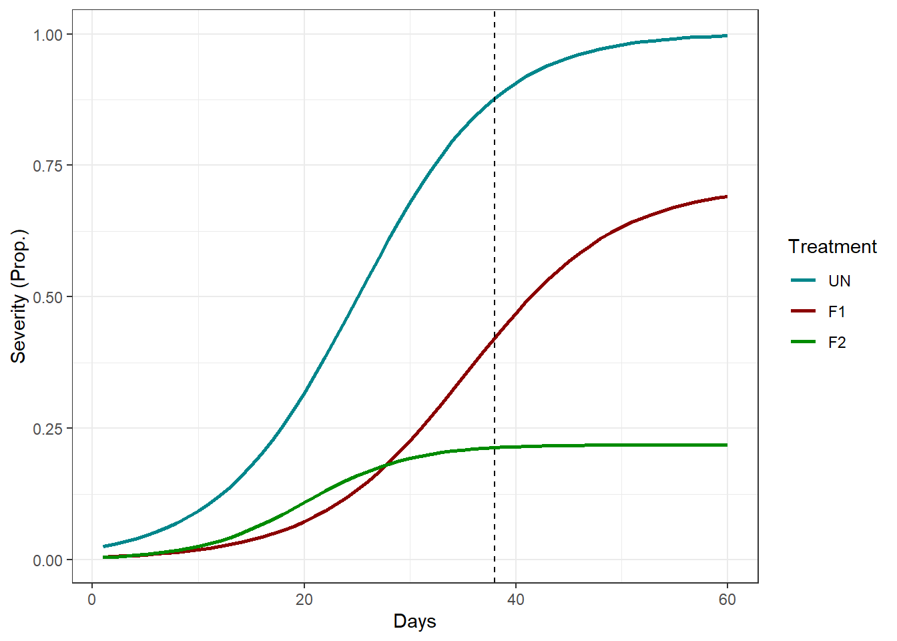
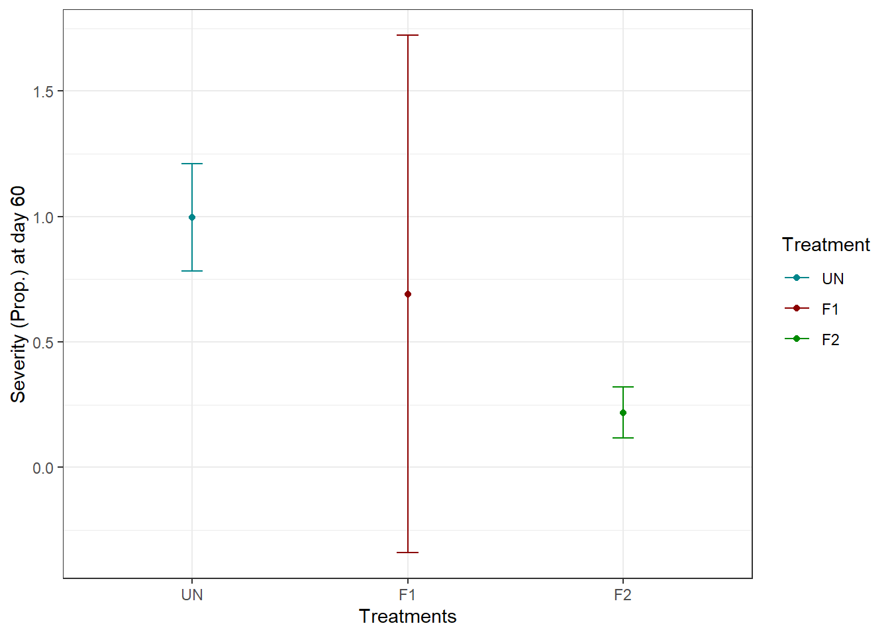

Chapter 3 Introduction and applied example
3.1 Let’s work together
The experiment:
RCBD (Randomized Complete Block Design) with 4 replicates (blocks)
Three treatments: Untreated (UN), Fungicide 1 (F1), Fungicide 2 (F2)
Evaluations over time in 6 different dates after a critical growth stage (Flag Leaf Emergence): 3, 10, 17, 24, 31, and 38 days after
Disease was measured as: Severity (Percentage of leaf area affected by the disease)*
The disease: Wheat stripe rust (Polycyclic - Multiple cycles within a crop season)*
*Most critical information
The data:
Code
# Read the data
df <- read_excel("Example_df1.xlsx")
# Control trt factor order
df <- df %>%
mutate(
trt = as.factor(trt),
trt = fct_relevel(trt, c("UN", "F1", "F2")))
# Exploratory plot
ggplot(df, aes(day, y, colour = trt)) +
geom_point() +
stat_summary(geom = "line", fun = mean, size = 1, aes(group = trt)) +
scale_color_manual(values = c("turquoise4", "#8B0000", "green4")) +
labs(y = "Severity (Prop.)", x = "Days", colour = "Treatment") +
theme_bw()
How would you analyse this?
Pick one time and proceed with ANOVA + Multiple comparison
- Why not use repeated measures ANOVA or Split-plot in time?
Average treatments over time and proceed with ANOVA + Multiple comparison
- Why then collect all this information if we are going to “lose” it?
3.2 Modeling biological processes in time
Today, we will work with three very accessible options:
3.2.1 Polynomial regression
Polynomial regression is the name given to a linear model whose the standard linear predictor \(y_i = \beta_0 + \beta_1x_i + \varepsilon_i\) is replaced by a polynomial function:
\[y_i = \beta_0 + \beta_1x_i + \beta_2x_i^2 + ... + \beta_dx_i^d + \varepsilon_i\]
Although polynomial regression is still a linear model1 it is more flexible than a linear predictor, and allow for producing extremely nonlinear curves (higher the degree \(d\), higher the flexibility).
3.2.2 Beta regression
A beta regression is a linear regression model where the response is assumed to follow a beta distribution2, while the mean is modeled through a link function.
Recall the linear regression model:
\[y_i = \beta_0 + \beta_1x_i + \varepsilon_i \\[10pt] \varepsilon_i \sim Normal(0, \sigma^2_\varepsilon)\]
We can re-write this model using probabilistic notation as:
\[y_i \sim Normal(\beta_0 + \beta_1x_i, \, \sigma^2_\varepsilon)\]
Now, for a beta regression model, we would write it as:
\[y_i \sim Beta(\mu_i, \, \phi)\]
where \(\mu_i\) is the mean and \(\phi\) is the dispersion parameter, inversely related to the variance. For more on beta regression, check this paper out: Ferrari and Cribari-Neto (2004).
Notice that in both cases, we are modeling the mean (\(\mu\)), but there is a very important difference, in the beta regression, we model the mean through a link function3:
\[\eta_i = g(\mu_i) = \beta_0 + \beta_1x_i\]
Here, our link function will be the logit:
\[g(\mu_i) = log(\frac{\mu_i}{1-\mu_i})\]
This link function transforms proportions from (0, 1) to the real line. And our expectation/mean is:
\[\mu_i = logit^{-1}(\eta_i) = \frac{1}{1 + e^{-\eta_i}}\]
Which is our original response scale at (0, 1).
Remark: The standard beta distribution does not include exact 0 or 1, and such values can happen. Handling these boundary values is an extension beyond this workshop. Options include:
Hurdle models:
Transformations: Smithson and Verkuilen (2006)
3.2.3 Logistic Disease Progress Curve
Disease progress curves are nonlinear models historically used in plant pathology to model the progress of plant disease epidemics on time. They are mechanistic models4 with direct relation to specific types of disease cycles, with logistic models being associated with polycyclic diseases, and monomolecular models to monocyclic diseases.
Among the disease progress curves, the logistic is one of the most widely used ones!
The logistic disease progress curve is represented with the following equation:
\[y_i = \frac{K}{1+(\frac{K-y_0}{y0})e^{-rx_i}}\]
However, we use the logistic disease progress curve equation to model the expectation/mean of our distribution, similarly to what we did before. Today, we will be doing something like this:
\[y_i \sim N(\mu_i, \, \sigma^2) \\[10pt] \mu_i = \frac{K}{1+(\frac{K-y_0}{y0})e^{-rx_i}}\]
In this model, it is important to notice that parameters have meaning, the following points describe the three parameters of the logistic disease progress curve:
\(K\) - Maximum disease potential, upper asymptote.
\(y_0\) - Initial disease level at \(t = 0\).
\(r\) - Apparent rate of growth: Epidemic “speedometer”, how fast the epidemic moves from \(y_0\) to \(K\).
3.3 Applying the logistic disease progress curve to our example
This is the model we will be working with:
\[y_{ij} \sim N(\mu_{ij}, \, \sigma^2) \\[10pt] \mu_{ij} = \frac{K_i}{1+(\frac{K_i - y_{0i}}{y_{0i}})e^{-r_it_j}}\]
where the mean \(\mu_{ij}\) of the ith treatment levels at the jth day was modeled using the logistics disease progress curve, with the three parameters \(K\), \(r\), and \(y_0\), being specific for each ith treatment level.
The research question we wish to answer is: Which product was the most effective in suppressing the epidemic?
Code
# Getting initials for the model
treatments <- unique(df$trt)
initials <- data.frame()
for(i in seq_along(treatments)){
df_f <- filter(df, df$trt == treatments[i])
init <- getInitial(y ~ SSlogis(day, Asym, xmid, scal), df_f)
temp <- data.frame(
K = as.numeric(init["Asym"]),
r = 1/as.numeric(init["scal"]),
treat = treatments[i])
temp$y0 <- temp$K/(exp(as.numeric(init["xmid"])*temp$r)+1)
initials <- rbind(initials, temp)
}
# Model fit
## Cehck treatment levels - UN as reference
levels(df$trt)
## Organize starting values
init_UN <- filter(initials, treat == "UN")
init_F1 <- filter(initials, treat == "F1")
init_F2 <- filter(initials, treat == "F2")
start <- c(
# K
init_UN$K,
init_F1$K - init_UN$K,
init_F2$K - init_UN$K,
# r
init_UN$r,
init_F1$r - init_UN$r,
init_F2$r - init_UN$r,
# y0
init_UN$y0,
init_F1$y0 - init_UN$y0,
init_F2$y0 - init_UN$y0
)
## Fitting the model using generalized least squares
m1 <- gnls(
y ~ K / (1 + ((K - y0) / y0) * exp(-r * day)),
data = df,
params = K + r + y0 ~ trt,
start = start
)What did we get:
Estimates:
\[K \: r \: y_0\]
Code
m1_est <- data.frame(
trt = c("UN", "F1", "F2"),
K_est = c(coef(m1)[1], coef(m1)[1] + coef(m1)[2], coef(m1)[1] + coef(m1)[3]),
r_est = c(coef(m1)[4], coef(m1)[4] + coef(m1)[5], coef(m1)[4] + coef(m1)[6]),
y0_est = c(coef(m1)[7], coef(m1)[7] + coef(m1)[8], coef(m1)[7] + coef(m1)[9]))
# SE for parameter estimates
m1_est <- m1_est %>%
mutate(
K_se = case_when(
trt == "UN" ~ sqrt(vcov(m1)[1,1]),
trt == "F1" ~ deltamethod(~ x1+x2, coef(m1), vcov(m1)),
trt == "F2" ~ deltamethod(~ x1+x3, coef(m1), vcov(m1))),
r_se = case_when(
trt == "UN" ~ sqrt(vcov(m1)[4,4]),
trt == "F1" ~ deltamethod(~ x4+x5, coef(m1), vcov(m1)),
trt == "F2" ~ deltamethod(~ x4+x6, coef(m1), vcov(m1))),
y0_se = case_when(
trt == "UN" ~ sqrt(vcov(m1)[7,7]),
trt == "F1" ~ deltamethod(~ x7+x8, coef(m1), vcov(m1)),
trt == "F2" ~ deltamethod(~ x7+x9, coef(m1), vcov(m1)))
)
# CI for K
m1_est$K_lb <- m1_est$K_est - 1.96*m1_est$K_se
m1_est$K_ub <- m1_est$K_est + 1.96*m1_est$K_se
# CI for r
m1_est$r_lb <- m1_est$r_est - 1.96*m1_est$r_se
m1_est$r_ub <- m1_est$r_est + 1.96*m1_est$r_se
# CI for r
m1_est$y0_lb <- m1_est$y0_est - 1.96*m1_est$y0_se
m1_est$y0_ub <- m1_est$y0_est + 1.96*m1_est$y0_se
est_long <- m1_est %>%
pivot_longer(cols = -trt, names_to = c("par", ".value"), names_sep = "_")
# Plot
est_long <- est_long %>%
mutate(
trt = as.factor(trt),
trt = fct_relevel(trt, "UN", "F1", "F2"))
summary(m1)## Generalized nonlinear least squares fit
## Model: y ~ K/(1 + ((K - y0)/y0) * exp(-r * day))
## Data: df
## AIC BIC logLik
## -134.4891 -111.7224 77.24454
##
## Coefficients:
## Value Std.Error t-value p-value
## K.(Intercept) 1.0018741 0.1153627 8.684559 0.0000
## K.trtF1 -0.2900662 0.6281129 -0.461806 0.6458
## K.trtF2 -0.7830126 0.1265064 -6.189508 0.0000
## r.(Intercept) 0.1513961 0.0291060 5.201542 0.0000
## r.trtF1 -0.0094225 0.0828558 -0.113722 0.9098
## r.trtF2 0.0504394 0.1468550 0.343464 0.7324
## y0.(Intercept) 0.0219960 0.0126578 1.737743 0.0871
## y0.trtF1 -0.0173268 0.0152994 -1.132518 0.2617
## y0.trtF2 -0.0182585 0.0160080 -1.140586 0.2584
##
## Correlation:
## K.(In) K.trF1 K.trF2 r.(In) r.trF1 r.trF2 y0.(I) y0.tF1
## K.trtF1 -0.184
## K.trtF2 -0.912 0.167
## r.(Intercept) -0.836 0.154 0.763
## r.trtF1 0.294 -0.909 -0.268 -0.351
## r.trtF2 0.166 -0.030 -0.425 -0.198 0.070
## y0.(Intercept) 0.715 -0.131 -0.652 -0.967 0.340 0.192
## y0.trtF1 -0.592 0.583 0.540 0.800 -0.799 -0.159 -0.827
## y0.trtF2 -0.566 0.104 0.659 0.764 -0.269 -0.732 -0.791 0.654
##
## Standardized residuals:
## Min Q1 Med Q3 Max
## -2.34282142 -0.48021522 -0.07631176 0.37522827 2.89725703
##
## Residual standard error: 0.08847691
## Degrees of freedom: 72 total; 63 residualCode

| trt | par | est | se | lb | ub |
|---|---|---|---|---|---|
| UN | K | 1.0018741 | 0.1153627 | 0.7757632 | 1.2279850 |
| UN | r | 0.1513961 | 0.0291060 | 0.0943484 | 0.2084439 |
| UN | y0 | 0.0219960 | 0.0126578 | -0.0028133 | 0.0468053 |
| F1 | K | 0.7118079 | 0.6174280 | -0.4983509 | 1.9219668 |
| F1 | r | 0.1419736 | 0.0775753 | -0.0100740 | 0.2940212 |
| F1 | y0 | 0.0046692 | 0.0085936 | -0.0121743 | 0.0215127 |
| F2 | K | 0.2188615 | 0.0519166 | 0.1171050 | 0.3206179 |
| F2 | r | 0.2018356 | 0.1439417 | -0.0802902 | 0.4839614 |
| F2 | y0 | 0.0037375 | 0.0097998 | -0.0154701 | 0.0229451 |
Code
Contrasts:
\[\Delta = \phi_i - \phi_j \\[10pt] H_0: \Delta = 0 \\[10pt] H_a: \Delta \neq 0\]
Code
| contrast | K | r | y0 |
|---|---|---|---|
| UN - F1 | 0.646 | 0.910 | 0.262 |
| UN - F2 | < 0.001 | 0.732 | 0.258 |
| F1 - F2 | 0.675 | 0.933 | 0.999 |
Predicted curves:
\[\mu_{ij}\]
Code
pred_df <- data.frame(
trt = c(rep("UN", 60), rep("F1", 60), rep("F2", 60)),
day = c(rep(seq(1, 60, by = 1), 3)))
pred_df$pred <- predict(m1, pred_df)
pred_df <- pred_df %>%
mutate(
trt = as.factor(trt),
trt = fct_relevel(trt, "UN", "F1", "F2"))
ggplot(pred_df, aes(day, pred, colour = trt, group = trt)) +
geom_line(linewidth = 1) +
geom_vline(xintercept = 38, linetype = 2) +
scale_color_manual(values = c("turquoise4", "#8B0000", "green4")) +
labs(y = "Severity (Prop.)", x = "Days", colour = "Treatment") +
theme_bw()
How many units of y are increasing per day for each curve at the maximum growth point5?
\[\frac{Kr}{4}\]
Code
m1_est$y_inf <- m1_est$K_est/2
m1_est$max_s <- m1_est$r_est*m1_est$y_inf*(1-(m1_est$y_inf/m1_est$K_est))
UN_se_slope <- deltamethod(~ (x1*x4)/4, coef(m1), vcov(m1)) # UN se
F1_se_slope <- deltamethod(~ ((x1+x2)*(x4+x5))/4, coef(m1), vcov(m1)) # F1 se
F2_se_slope <- deltamethod(~((x1+x3)*(x4+x6))/4, coef(m1), vcov(m1)) # F2 se
m1_est <- m1_est %>%
mutate(se = case_when(
trt == "UN" ~ UN_se_slope,
trt == "F1" ~ F1_se_slope,
trt == "F2" ~ F2_se_slope))
m1_est$max_s_lb <- m1_est$max_s-1.96*m1_est$se
m1_est$max_s_ub <- m1_est$max_s+1.96*m1_est$se
slope_table <- m1_est[,-c(2:13)]
kable(slope_table)| trt | y_inf | max_s | se | max_s_lb | max_s_ub |
|---|---|---|---|---|---|
| UN | 0.5009371 | 0.0379200 | 0.0043548 | 0.0293845 | 0.0464555 |
| F1 | 0.3559040 | 0.0252645 | 0.0104325 | 0.0048167 | 0.0457123 |
| F2 | 0.1094307 | 0.0110435 | 0.0063841 | -0.0014692 | 0.0235563 |
Code
slop_cont <- data.frame(
contrast = c("UN-F1", "UN-F2", "F1-F2"),
z = c(
(slope_table$max_s[1] - slope_table$max_s[2])/(deltamethod(~ (x1*x4)/4 - ((x1+x2)*(x4+x5))/4, coef(m1), vcov(m1))),
(slope_table$max_s[1] - slope_table$max_s[3])/(deltamethod(~ (x1*x4)/4 - ((x1+x3)*(x4+x6))/4, coef(m1), vcov(m1))),
(slope_table$max_s[2] - slope_table$max_s[3])/(deltamethod(~ ((x1+x2)*(x4+x5))/4 - ((x1+x3)*(x4+x6))/4, coef(m1), vcov(m1)))
)
)
slop_cont$p_value <- 2*pnorm(abs(slop_cont$z), lower.tail = FALSE)
kable(slop_cont)| contrast | z | p_value |
|---|---|---|
| UN-F1 | 1.119462 | 0.2629433 |
| UN-F2 | 3.477836 | 0.0005055 |
| F1-F2 | 1.162713 | 0.2449462 |
What is the disease severity at day 60?
Code
pred_60 <- filter(pred_df, day == 60)
UN_se_60 <- deltamethod(~ (x1 / (1 + ((x1 - x7) / x7) * exp(-x4 * 60))), coef(m1), vcov(m1))
F1_se_60 <- deltamethod(~ ((x1+x2) / (1 + (((x1+x2) - (x7+x8)) / (x7+x8)) * exp(-(x4+x5) * 60))), coef(m1), vcov(m1))
F2_se_60 <- deltamethod(~ ((x1+x3) / (1 + (((x1+x3) - (x7+x9)) / (x7+x9)) * exp(-(x4+x6) * 60))), coef(m1), vcov(m1))
pred_60 <- pred_60 %>%
mutate(se = case_when(
trt == "UN" ~ UN_se_60,
trt == "F1" ~ F1_se_60,
trt == "F2" ~ F2_se_60))
pred_60$CI.ub <- pred_60$pred+1.96*pred_60$se
pred_60$CI.lb <- pred_60$pred-1.96*pred_60$se
ggplot(pred_60, aes(trt, pred, colour = trt)) +
geom_point() +
geom_errorbar(aes(ymin = CI.lb, ymax = CI.ub), width = 0.1) +
scale_color_manual(values = c("turquoise4", "#8B0000", "green4")) +
labs(y = "Severity (Prop.) at day 60", x = "Treatments", colour = "Treatment") +
theme_bw()
Conclusion:
Fungicide 2 was capable of reducing the maximum severity potential, limiting the potential disease damage;
Fungicide 2 also reduced the maximum disease increase compared to untreated check;
There is no evidence of differences between Fungicide 1 and the untreated check;
60 days after the epidemic started, expected/mean proportion is relatively different between treatments. However, we are much more certain of a high severity for UN and low for F2 than the severity for the F1 treatment.
Interesting topics of discussion:
Notice how uncertainty is propagated from the estimated curve parameters and the calculated derived quantities6.
Most of the lack of evidence about the differences between UN and F1, and UN and F2, arise from the high uncertainty on F1’s maximum disease potential. It does not mean our analysis is wrong, but it exposes one of the difficulties of estimating multiple parameters of nonlinear models.
- More about this on Nonlinear Models for the Plant Sciences
Linear model: Linear in the parameters. In summary: All unknown parameters only multiplies known quantities; All unknown parameters are added together; All parameters are outside nonlinear functions.
\[\sum_j^b \beta_jxi\]↩︎
A beta distribution is a distribution whose the support (values a random variable arising from the distribution can assume) is bounded between 0 and 1. It is commonly used to model variables bounded between this interval, such as proportions.
\[\theta \sim Beta(\alpha, \, \beta), \: \theta \in (0, \, 1)\]↩︎
A link function is a function that maps the expected value (mean) of the response variable to the linear predictor.
\[g(\mu) = \eta\]↩︎
Mechanistic models are designed to account for underlying processes in the system being studied. These underlying processes are represented through the model parameters. Each parameter has naturally a biological meaning, or a direct interpretation.↩︎
The LDPC has a different slope at every time, but it reaches a maximum in \(\frac{K}{2}\).↩︎
Derived quantities are functions of estimated parameters.↩︎